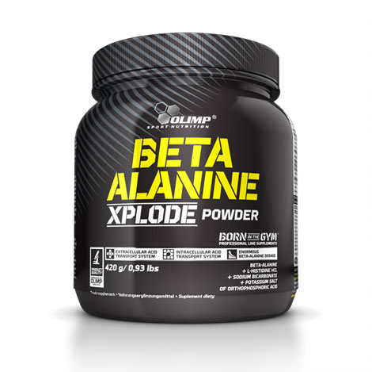

<!DOCTYPE html>
<html lang="ru">
  <head>
    <meta charset="utf-8">
    <meta http-equiv="X-UA-Compatible" content="IE=edge">
    <title>Главная</title>
    <meta name="viewport" content="width=device-width">
    <link rel="shortcut icon" href="favicon.ico">
    <link rel="stylesheet" href="css/styles.css">
  </head>
  <body>
    <header class="header">
      <div class="header__inner"><a class="header__logo"></a>
        <div class="header__url">Gerthshop.pro</div>
        <div class="header__slogan"><span>ТВОЙ ПРО ПОСТАВЩИК</span> <br><span>спортивной фармакологии</span></div>
        <div class="header__top-right">
          <div class="header__fav"><a><span>3</span></a></div>
          <div class="header__last-mess"><a>YF123456789RU</a></div>
          <div class="header__auth"><a class="header__auth-link">Личный кабинет</a></div>
        </div>
        <div class="top-menu__open-btn">дополнительно</div>
        <div class="top-menu">
          <ul class="top-menu__list">
            <li class="top-menu__item"><a class="top-menu__link" href="#">О нас</a></li>
            <li class="top-menu__item"><a class="top-menu__link" href="#">Сотрудничество</a></li>
            <li class="top-menu__item"><a class="top-menu__link" href="#">FAQ и правила заказа</a></li>
            <li class="top-menu__item"><a class="top-menu__link" href="#">Сертификаты</a></li>
            <li class="top-menu__item"><a class="top-menu__link" href="#">Общение</a></li>
          </ul>
        </div>
        <div class="main-menu__open-btn">Меню</div>
        <nav class="main-menu red">
          <ul class="main-menu__list mega-menu" id="main-menu">
            <li class="main-menu__item"><a class="main-menu__link" href="#">КАТАЛОГ</a>
              <ul class="main-menu__submenu">
                <li class="main-menu__submenu-item"><a class="main-menu__submenu-link">Заголовок 1
                    <ul class="main-menu__submenu-level2">
                      <li class="main-menu__submenu-item"><a class="main-menu__submenu-link">Тест</a></li>
                      <li class="main-menu__submenu-item"><a class="main-menu__submenu-link">Тест</a></li>
                      <li class="main-menu__submenu-item"><a class="main-menu__submenu-link">Тест</a></li>
                      <li class="main-menu__submenu-item"><a class="main-menu__submenu-link">Тест</a></li>
                    </ul></a></li>
                <li class="main-menu__submenu-item"><a class="main-menu__submenu-link">Заголовок 1
                    <ul class="main-menu__submenu-level2">
                      <li class="main-menu__submenu-item"><a class="main-menu__submenu-link">Тест</a></li>
                      <li class="main-menu__submenu-item"><a class="main-menu__submenu-link">Тест</a></li>
                      <li class="main-menu__submenu-item"><a class="main-menu__submenu-link">Тест</a></li>
                      <li class="main-menu__submenu-item"><a class="main-menu__submenu-link">Тест</a></li>
                    </ul></a></li>
              </ul>
            </li>
            <li class="main-menu__item"><a class="main-menu__link" href="#">ПРОИЗВОДИТЕЛИ</a></li>
            <li class="main-menu__item"><a class="main-menu__link" href="#">СКИДКИ</a></li>
            <li class="main-menu__item"><a class="main-menu__link" href="#">ДОСТАВКА И ОПЛАТА</a></li>
            <li class="main-menu__item"><a class="main-menu__link" href="#">НОВИЧКАМ</a></li>
            <li class="main-menu__item"><a class="main-menu__link" href="#">ОТЗЫВЫ</a></li>
          </ul>
        </nav>
        <div class="header-search">
          <input class="header-search__input" placeholder="Поиск" type="text">
          <input class="header-search__submit" value="" type="submit">
        </div>
        <div class="header-cart">
          <div class="header-cart__title">Корзина</div>
          <div class="header-cart__present">В корзине лежит подарок!</div>
        </div>
      </div>
    </header>
    <div class="breadcrumbs">
      <div class="breadcrumbs__inner">
        <ul class="breadcrumbs__list">
          <li class="breadcrumbs__item"><a class="breadcrumbs__link">Главная</a><span class="breadcrumbs__current">заголовок страницы</span></li>
        </ul>
      </div>
    </div>
    <div class="product-page">
      <div class="product-page__top">
        <div class="product">
          <div class="product__left">
            <div class="product__pic--big"><a class="fancy" href="images/product.jpg"></a></div>
            <div class="product__foto-list">
              <div class="product__foto-item"><a data-src="images/product.jpg"></a></div>
              <div class="product__foto-item"><a data-src="images/product.jpg"></a></div>
              <div class="product__foto-item"><a data-src="images/product.jpg"></a></div>
              <div class="product__foto-item"><a data-src="images/product.jpg"></a></div>
            </div>
          </div>
          <div class="product__right">
            <h1 class="product__h1">Метандиенон<a class="product__brand">Название бренда!</a><a class="product__rev-lnk" href="#reviews-block">Отзывы (1)</a>
              <div class="product__stars">
                <div class="product__stars-inner"></div>
              </div>
            </h1>
            <div class="product__anons"><span>Проникая внутрь клеточного ядра, активизирует генетический аппарат клетки
              еще увеличению синтеза ДНК, РНК и структурных белков, активации ферментов цепи тканевого возможно и усилению тканевого дыхания, окислительного фосфорилирования возможно и усилению синтеза АТФ и накоплению макроэргов внутри клетки.
              Стимулирует анаболические и подавляет катаболические процессы,
              вызванные глюкокортикоидами.</span>
            </div><a class="product__more" href="#full-descr">Подробнее!</a>
            <ul class="product__advant-list">
              <li class="product__advant-item"><span>Лучший в мире медленно усваиваемый белок!</span></li>
              <li class="product__advant-item"><span>С высоким содержанием антикатаболических аминокислот</span></li>
              <li class="product__advant-item"><span>Чистый мицелярный казеин и Лучший в мире медленно усваиваемый белок!</span></li>
            </ul>
            <div class="product__avail">В наличии!</div>
            <div class="product__pay-block">
              <div class="product__price">38 000 р.</div>
              <div class="product__quan"><span class="product__minus">-</span>
                <input class="product__quan-input" type="num" value="1" min="1"><span class="product__plus">+</span>
              </div><a class="product__to-cart">В КОРЗИНУ!</a><a class="product__to-fav">МНЕ НРАВИТСЯ</a>
            </div>
          </div>
        </div>
      </div>
      <section class="product-page__descr" id="full-descr">
        <div class="product-page__descr-inner">
          <div class="product-page__h3 product-page__descr-h3">описание</div>
          <div class="product-page__descr-text">
            <p>Проникая внутрь клеточного ядра, активизирует генетический аппарат клетки еще увеличению синтеза ДНК, РНК и структурных белков, активации ферментов цепи тканевого возможно и усилению тканевого дыхания, окислительного фосфорилирования возможно и усилению синтеза АТФ и накоплению макроэргов внутри клетки.
              Стимулирует анаболические и подавляет катаболические процессы,
              вызванные глюкокортикоидами.
              Приводит к увеличению мышечной массы, уменьшению отложений жира и
            </p>
            <p>Проникая внутрь клеточного ядра, активизирует генетический аппарат клетки еще увеличению синтеза ДНК, РНК и структурных белков, активации ферментов цепи тканевого возможно и усилению тканевого дыхания, окислительного фосфорилирования возможно и усилению синтеза АТФ и накоплению макроэргов внутри клетки.
              Стимулирует анаболические и подавляет катаболические процессы,
              вызванные глюкокортикоидами.
              Приводит к увеличению мышечной массы, уменьшению отложений жира и
            </p>
          </div>
          <div class="product-page__use">
            <div class="product-page__h3 product-page__use-h3">способ применения</div>
            <div class="product-page__use-text">
              <p>Проникая внутрь клеточного ядра, активизирует генетический аппарат клетки</p>
              еще увеличению синтеза ДНК, РНК и структурных белков, активации ферментов цепи тканевого возможно и усилению тканевого дыхания,
              окислительного фосфорилирования возможно и усилению синтеза АТФ и накоплению макроэргов внутри клетки.
              Стимулирует анаболические и подавляет катаболические процессы,
              вызванные глюкокортикоидами.
            </div>
          </div>
        </div>
      </section>
      <section class="product-page__reviews" id="reviews-block">
        <div class="product-page__reviews-inner">
          <div class="product-page__h3">отзывы</div>
          <div class="product-page__reviews-list">
            <div class="reviews-list__item">
              <div class="reviews-list__item-foto"></div>
              <div class="reviews-list__item-top"><span class="reviews-list__item-name">Николаев</span><span class="reviews-list__item-date">18 сентября 2016</span>
                <div class="reviews-list__stars">
                  <div class="reviews-list__stars-inner"></div>
                </div>
              </div>
              <div class="reviews-list__item-text">
                Проникая внутрь клеточного ядра, активизирует генетический аппарат клеткиеще увеличению синтеза ДНК, РНК и структурных белков, активации ферментов цепи тканевого возможно и усилению тканевого дыхания, окислительного фосфорилирования возможно и усилению</div>
              <div class="reviews-list__item-pos"><span>Достоинства:</span> Проникая внутрь клеточного ядра</div>
              <div class="reviews-list__item-neg"><span>Недостатки:</span> Возможный текст</div>
              <div class="reviews-list__item-bot"><a class="reviews-list__item-quote">Цитировать</a><a class="reviews-list__item-answer">Ответить</a><span class="reviews-list__item-plus">8</span><span class="reviews-list__item-minus">8</span></div>
            </div>
            <div class="reviews-list__item reviews-list__item-feedback">
              <div class="reviews-list__item-foto"></div>
              <div class="reviews-list__item-top"><span class="reviews-list__item-name">Николаев</span><span class="reviews-list__item-date">18 сентября 2016</span></div>
              <div class="reviews-list__item-text">
                Проникая внутрь клеточного ядра, активизирует генетический аппарат клеткиеще увеличению синтеза ДНК, РНК и структурных белков, активации ферментов цепи тканевого возможно</div>
              <div class="reviews-list__item-bot"><a class="reviews-list__item-quote">Цитировать</a><a class="reviews-list__item-answer">Ответить</a><span class="reviews-list__item-plus">8</span><span class="reviews-list__item-minus">8</span></div>
            </div>
            <div class="reviews-list__item">
              <div class="reviews-list__item-foto"></div>
              <div class="reviews-list__item-top"><span class="reviews-list__item-name">Николаев</span><span class="reviews-list__item-date">18 сентября 2016</span>
                <div class="reviews-list__stars">
                  <div class="reviews-list__stars-inner"></div>
                </div>
              </div>
              <div class="reviews-list__item-text">
                Проникая внутрь клеточного ядра, активизирует генетический аппарат клеткиеще увеличению синтеза ДНК, РНК и структурных белков, активации ферментов цепи тканевого возможно и усилению тканевого дыхания, окислительного фосфорилирования возможно и усилению</div>
              <div class="reviews-list__item-pos"><span>Достоинства:</span> Проникая внутрь клеточного ядра</div>
              <div class="reviews-list__item-neg"><span>Недостатки:</span> Возможный текст</div>
              <div class="reviews-list__item-bot"><a class="reviews-list__item-quote">Цитировать</a><a class="reviews-list__item-answer">Ответить</a><span class="reviews-list__item-plus">8</span><span class="reviews-list__item-minus">8</span></div>
            </div>
          </div>
          <div class="page-nav">
            <div class="page-nav__inner">
              <div class="page-nav__ul"><a class="page-nav__prev"></a>
                <div class="page-nav__li"><a>1</a></div>
                <div class="page-nav__li"><a>2</a></div>
                <div class="page-nav__li"><a>3</a></div>
                <div class="page-nav__li"><a>4</a></div>
                <div class="page-nav__li"><a>5</a></div><a class="page-nav__next"></a>
              </div>
            </div>
          </div>
        </div>
      </section>
    </div>
    <footer class="page-footer">
      <div class="page-footer__inner">
        <div class="page-footer__left">
          <div class="footer-menu">
            <ul class="footer-menu__list">
              <li class="footer-menu__item"><a class="footer-menu__link">КАТАЛОГ</a></li>
              <li class="footer-menu__item"><a class="footer-menu__link">ПРОИЗВОДИТЕЛИ</a></li>
              <li class="footer-menu__item"><a class="footer-menu__link">СКИДКИ</a></li>
              <li class="footer-menu__item"><a class="footer-menu__link">Новичкам</a></li>
            </ul>
            <ul class="footer-menu__list">
              <li class="footer-menu__item"><a class="footer-menu__link">КАТАЛОГ</a></li>
              <li class="footer-menu__item"><a class="footer-menu__link">ПРОИЗВОДИТЕЛИ</a></li>
              <li class="footer-menu__item"><a class="footer-menu__link">СКИДКИ</a></li>
              <li class="footer-menu__item"><a class="footer-menu__link">Новичкам</a></li>
            </ul>
          </div>
          <div class="page-footer__price-link"><a>Единый прайс-лист продукции<br> в удобным поиском!</a></div>
        </div>
        <div class="page-footer__right">
          <div class="page-footer__mail-note">Для связи напишите консультанту в вашем Личном кабинете</div>
          <div class="page-footer__pay">
            <div class="page-footer__pay-title">Принимаем к оплате</div>
            <div class="page-footer__pay-sb"></div>
            <div class="page-footer__pay-btc"></div>
            <div class="page-footer__pay-etc"></div>
          </div>
          <div class="page-footer__deliver">
            <div class="page-footer__deliver-title">Способы доставки</div>
            <div class="page-footer__deliver-icon"></div>
          </div>
        </div>
        <div class="clear"></div>
        <div class="page-footer__copyright">Copyright 2016. Gerthshop.pro - Гастроном спортивной<br> фармакологии №1 в России</div>
      </div>
    </footer>
    <div class="button-up"><a></a></div>
    <div class="side-buttons">
      <div class="side-buttons__button side-buttons__cart"><a class="side-buttons__button-inner"><span class="side-buttons__label">Корзина</span><span class="side-buttons__cart-inner"><span class="side-buttons__cart-num">3</span></span></a></div>
      <div class="side-buttons__button side-buttons__consult"><a class="side-buttons__button-inner"><span class="side-buttons__label">Консультант</span></a></div>
    </div>
    <script src="js/jquery-1.10.1.min.js"></script>
    <script src="js/scripts.js"></script>
    <script src="js/custom.js"></script>
  </body>
</html>